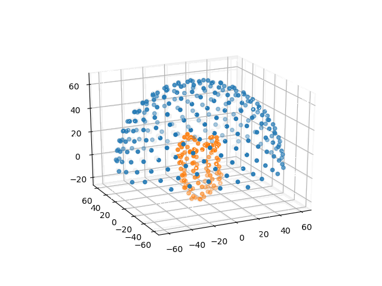

README¶
Transmembrane Protein Area¶
Tool written in Python3 to identify the place of the membranes of a transmembrane protein from its PDB structural file. The calculations are only based on geometry and residues hydrophobicity.
This program was done for a university project, based on the following paper:
Reference : Tusnády GE, Dosztányi Z, Simon I. Transmembrane proteins in the Protein Data Bank: identification and classification. Bioinformatics. 2004 Nov 22;20(17):2964-72. Epub 2004 Jun 4. PubMed PMID: 15180935.
Requirements¶
PyMol
$ sudo apt-get install pymol
Sphinx (if you want to rebuild the doc)
Install the few required packages / modules:
$ pip install -r src/requirements.txt
Run¶
Run the program:
$ python main.py -h | --help
It will show the following usage message:
Usage:
main.py FILE [--naccess PATH] [--points NUM]
Options:
-h, --help Show this
-n PATH, --naccess PATH Absolute path to local naccess binary
-p NUM, --points NUM Number of points to generate on the hemisphere to criss-cross the protein.
A high number will give better results, but longer calculations. [default: 250]
Example usage¶
$ python main.py data/1uaz.pdb
You can specify the resolution by choosing a higher number of points (default 250). The points are evenly distributed on the surface of an hemisphere that englobes the protein, forming as many lines passing by the center of mass of the protein and criss-crossing the protein. The more points the higher the resolution, but the longer the calculations:
{kind=link}
./main.py data/1uaz_tm.pdb --points 1000 && pymol src/pymol_visualize.pml
If you have problems with Naccess, you can specify the absolute path to the binary of naccess:
./main.py data/1uaz_tm.pdb --points 500 --naccess /absolute/path/to/naccess/binary && pymol src/pymol_visualize.pml
The progam generates a .pml file (PyMol file) containing commands to visualize the “best” line. This line is normal to the membranes.
Runtime¶
The program prints in the terminal the total runtime. The following run:
./main.py data/1uaz_tm.pdb --points 1000 && pymol src/pymol_visualize.pml
Generates the following output in the terminal:
Best line:
Point of the sphere: [6.2083, 3.9456, 69.5865]
Hydrophobicity: 476.4018
Center of mass: [0.2990, -0.3941, -0.0285]
Program runtime: 0:00:00.552432
And opens a PyMol vue of the protein with